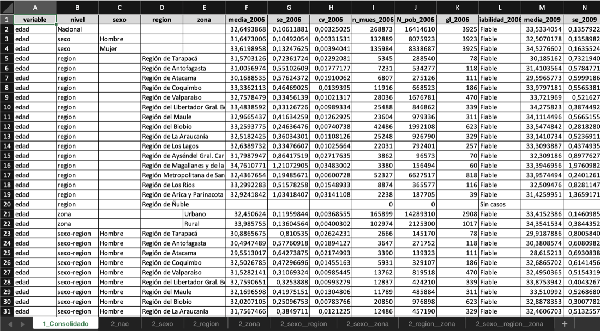
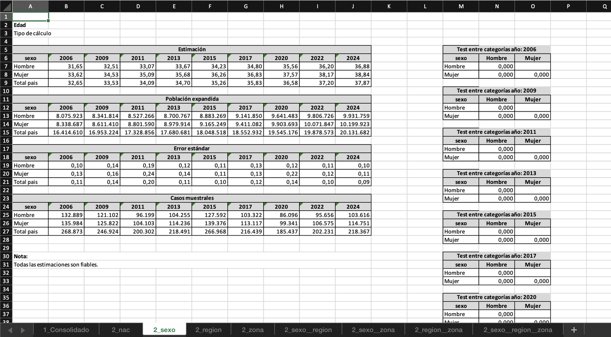

Herramientas de análisis de encuestas para el Observatorio Social del Ministerio de Desarrollo Social de Chile.
dosr provee funciones de alto nivel para calcular estimaciones (medias, proporciones, totales, razones y cuantiles) sobre diseños de encuestas complejas (como la CASEN) y generar reportes estandarizados en Excel con clasificación automática de fiabilidad estadística.
Uso básico
library(dosr)
library(srvyr)
design_2022 <- as_survey_design(casen_2022, ids = varunit,
strata = varstrat, weights = expr, nest = TRUE)
design_2024 <- as_survey_design(casen_2024, ids = varunit,
strata = varstrat, weights = expr, nest = TRUE)
# Proporción de pobreza por región (un año)
obs_prop(design_2022, sufijo = "2022", var = "pobreza",
des = "region", porcentaje = TRUE, save_xlsx = FALSE)
# Ingreso medio comparando dos años, con pruebas de significancia
obs_media(
designs = list(design_2022, design_2024),
sufijo = c("2022", "2024"),
var = "ytotcorh",
des = "region",
sig = TRUE,
save_xlsx = FALSE
)Reportes Excel
Cada función genera automáticamente un .xlsx con dos tipos de hojas:
Hoja consolidada: tabla completa con todas las estimaciones y métricas de calidad para todas las desagregaciones solicitadas:

Hojas de formato: presentación lista para publicar, con bloques separados por métrica (estimación, error estándar, población expandida, casos muestrales) y, cuando sig = TRUE, tablas de p-valores para comparaciones intra-año, contra el último año y contra el total nacional:

Parámetros principales
Todas las funciones obs_* comparten los siguientes parámetros:
| Parámetro | Descripción | Default |
|---|---|---|
designs |
Objeto tbl_svy o lista de ellos (varios años) |
(requerido) |
sufijo |
Etiquetas para cada diseño (p.ej. c("2022", "2024")) |
autodetectado |
var |
Nombre de la variable de interés | (requerido) |
des |
Variable(s) de desagregación |
NULL (solo nacional) |
filt |
Filtro como expresión R en string | NULL |
sig |
Calcular pruebas de significancia estadística | FALSE |
parallel |
Cálculo en paralelo (distribuye combos o diseños entre workers) | FALSE |
save_xlsx |
Guardar reporte Excel | TRUE |
dir |
Directorio de salida | "output" |
cv_umbral_alto |
Umbral de CV para “No Fiable (CV)” | 0.30 |
cv_umbral_medio |
Umbral de CV para “Poco Fiable (CV)” | 0.20 |
n_minimo |
Tamaño muestral mínimo | 30 |
nivel_confianza |
Nivel de confianza | 0.95 |
Clasificación de fiabilidad
Los resultados incluyen una columna fiabilidad que clasifica automáticamente la calidad de cada estimación:
| Valor | Significado |
|---|---|
| Fiable | Estimación publicable sin restricciones |
| Poco Fiable (CV / EE) | Publicar con advertencia |
| No Fiable (CV / gl / muestra) | No publicar; indica la causa |
| Sin casos | Subgrupo sin observaciones en la muestra |
Los criterios se aplican en orden de prioridad (grados de libertad → tamaño muestral → CV o EE). Todos los umbrales son configurables. Consulta la viñeta de metodología para los detalles estadísticos.